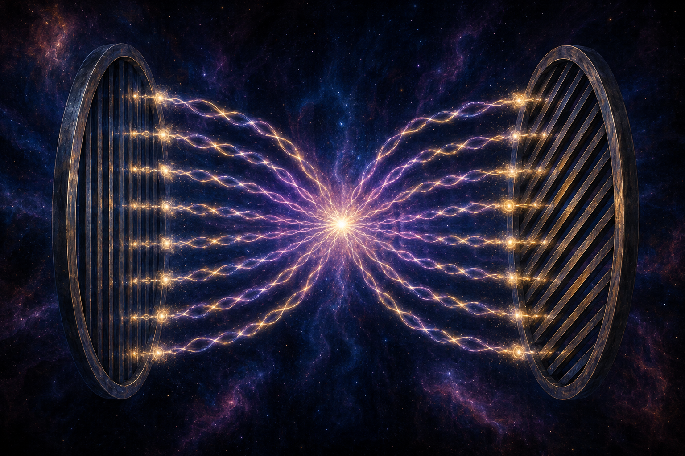

Niels Bohr: „Wer von der Quantenmechanik nicht schockiert ist, der hat sie nicht verstanden.“
Lassen wir uns schockieren…
Dieser Text basiert auf dem ersten Teil des inspirierenden Buches
Quantum Non-Locality & Relativity von Tim Maudlin. Ich hatte beim Lesen das Gefühl,
der Absonderlichkeit der Quanten sehr nahe zu kommen. Allerdings brauchte
ich noch ein paar mehr Grafiken und gedankliche Zwischenschritte, um alles zu verstehen.
Hier lesen Sie das Ergebnis: